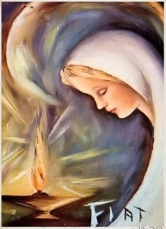

Es el Espíritu Santo quien suscita los carismas en la Iglesia como preciosos dones que la embellecen. Acogemos con mucha ilusión y gozo nuestro carisma, que consiste en tender a conseguir la perfección del amor por medio de una fidelidad absoluta y plena al Espíritu Santo, sin reservas, ofrendada para que todas las almas consagradas nos ofrendemos sin reservas.
(Constituciones, Parte I-1, art. 1 y 2)
Cada miembro de nuestra Congregación ha de procurar hacer de su persona y vida un “SI” perpetuo al Señor en cuanto Él le vaya pidiendo, indicando, sugiriendo, entregándosele en fidelidad y amor indivisible, como ofrenda santa y agradable al Padre, por Jesucristo en el Espíritu Santo, tendiendo siempre a que ese sí sea cada vez más matizado y acabado.
Todas las miradas de la Congregación han de encontrarse en este punto y fundirse en este esfuerzo: dar a Dios hasta el último esfuerzo.
